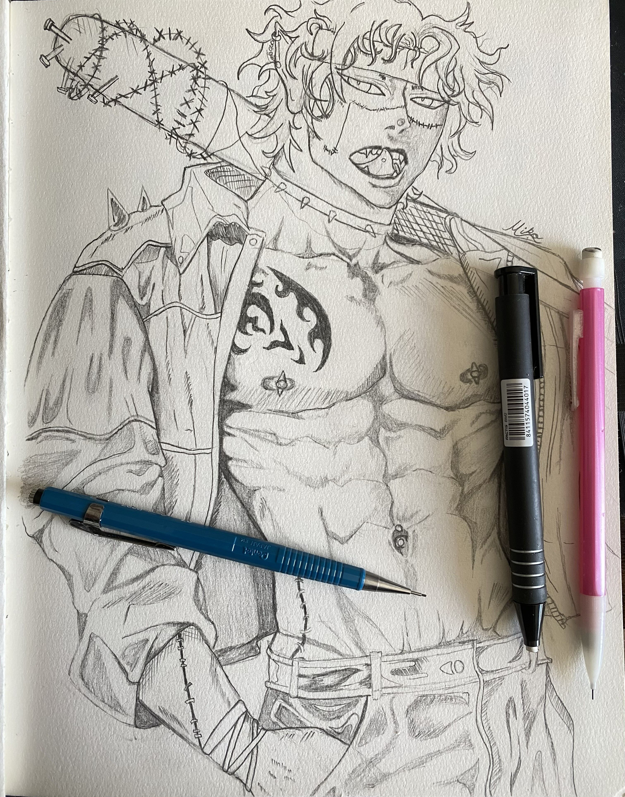
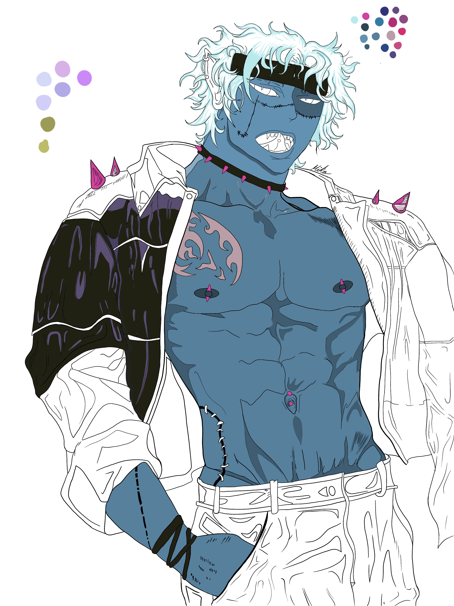
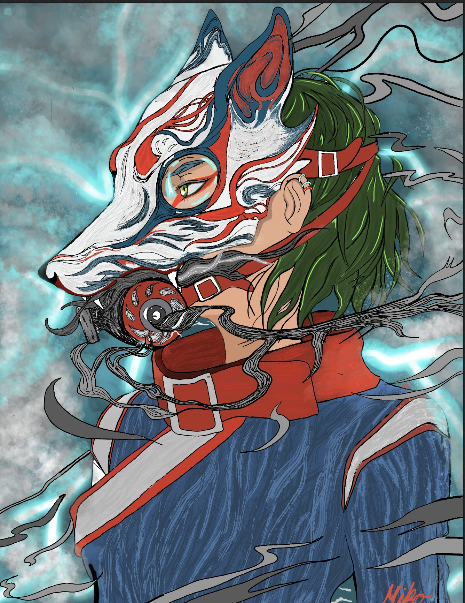

My Adventure
Hi, I am a new web developer with a passion for creating engaging and user-friendly websites. I really enjoy the CSS part so far and I am excited to continue learning and growing in this field. I'm really looking forward using color into the CSS and making the website appealing to the eye. I am currently working as a Starbucks Barista and I am learning through Asu online Program for GIT. I like more of a nature color palette with a little bit of modern colors so far. I like how this program enables you to be creative and learn as you go. I also like to draw in realism and more anime style. I am also a gamer that likes all types of games and how they look visually. I am really looking forward to learning more about web development and creating more projects in the future.
Some of my drawings

This is a graphite pencil drawing that I created with the help of a reference image while I did change a couple of things.
Digital Art (procreate)

This is a digital drawing that I created based on my graphite sketch. While adding color to the art piece
Anime Style (procreate)

I created this digitally. It is a anime style drawing with some cool elements I added.
Yellow Poppy Flower Trail
My family and I are a very outdoor-oriented family, and we love exploring nature. So this was a beach hike with a strip of sunflowers that I got to take a picture with